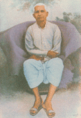
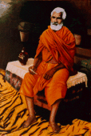
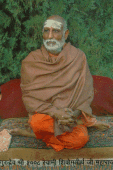

Mantra, Hatha, Laya and Raja Yogas are not separate from one another. They are merely the divisions of categories of a single yoga. Through practicing these four in their respective order and attaining competency is called Mahayoga. Knowledge will not be attained by depending on only one of the four, and only by attending wholly to all four will natural yoga, that is the union of the individual soul with the supreme Self, be perfected.
The path of Siddha Mahayoga is not a modern invention but in fact it has a history of at least one thousand years. References to initiation through shaktipat can be found in classical works such as the Yoga Vashishta, Shiva Purana, the Kularnava Tantra and in the works of the great scholar and yogi, Abhinavagupta. In many works the role of the guru is emphasized but in no work is it better epitomized than in the Shiva Sutras which states in Chapter 2, Verse 6:
If one is intrigued by the promise of the path of Siddha Mahayoga it is natural to seek out a teacher who can offer shaktipat initiation. Traditional sources on the path of Siddha Mahayoga encourage a careful review of the prospective disciple by the Siddha Guru as well as a review of the qualities of the Guru by the disciple. The qualities of a Guru are described in classical works of the path of Siddha Mahayoga and the Thirteenth Chapter of the Kularnava Tantra gives an extensive list of the qualities. First and foremost a Guru is expected to have a high degree of self-realization. Secondly a Guru is expected to have the knowledge and the capacity for conveying (shaktipat) initiation. Thirdly the Guru is expected to have a knowledge of the aspects of the path. Finally a Guru's behavior is expected to reflect his state of realization.
Even the literature of one thousand years ago discuss the difficulty of finding a Guru that embodies all these characteristics. As to the actual selection of a guru the classical works are quite pragmatic. They encourage a critical attitude in the beginning and only after the Guru has met one's criteria does one take initiation from him. From this point onwards they encourage unwavering devotion to the Guru. Unfortunately these days many students choose the opposite approach. They quickly adopt a devoted attitude toward a teacher and take initiation but over time some students become more and more critical of the teacher. This approach is generally ill-advised and is especially disastrous in the path of Siddha Mahayoga. Once one's kundalini is awakened through Guru's grace a variety of experiences may occur, some of these potentially terrifying. At these times a total confidence in the Siddha Guru is absolutely necessary to calm the anxiety. If, on the other hand, at these moments one has residual doubts regarding the Guru then one's anxiety and discomfort can become even more amplified. The literature of Siddha Yoga does acknowledge that a student may progress from one teacher to another but in doing so the student should never doubt or criticize prior teachers.
The known tradition of the contemporary Siddha Guru, Swami Shivom Tirth, begins with the figure of Swami Gangadhar Tirth. From there it continues with Swami Narayan Tirth. Swami Narayan Tirth passed the tradition of Siddha Mahayoga to Shri Yogananda Maharaj. Shri Yogananda Maharaj passed this tradition onto Swami Vishnu Tirth. Swami Vishnu Tirth received his initiation into the renunciate tradition of the Tirtha order from Swami Purushottam Tirth, an initiate of Swami Narayan Tirth. With Swami Vishnu Tirth this tradition began to appeal to a broader public. For over forty years Swami Vishnu Tirth's book Devatma Shakti has been one of the most reliable references on the path of Siddha Mahayoga. Swami Vishnu Tirth passed on this tradition to his most favored disciple Swami Shivom Tirth. Having retired from his duties as Swami Shivom Tirth has, in turn, passed on his lineage and responsibilities to Swami Shiv Mangal Tirth. Brief biographies of these inspiring individuals are given below. These biographies are drawn from the writings and discourses of Swami Shivom Tirth and Swami Shiv Mangal Tirth.
Swami Shankar Purushottam Tirtha
|  Shri Yoganandaji Maharaj |
 Shri Swami Vishnu Tirth Maharaj |
 Shri Swami Shivom Tirth Maharaj |
Note the following information is out of date.
Swami Shiv Mangal Tirth Swami Shivom Tirth Ashram 26 High Rd. Pond Eddy, NY 12770 telephone: 914-856-1121 email: sstirth@hotmail.com
The authors grant the right to copy and distribute this file, provided it remains unmodified and original authorship and copyright is retained. The author retains both the right and intention to modify and extend this document.